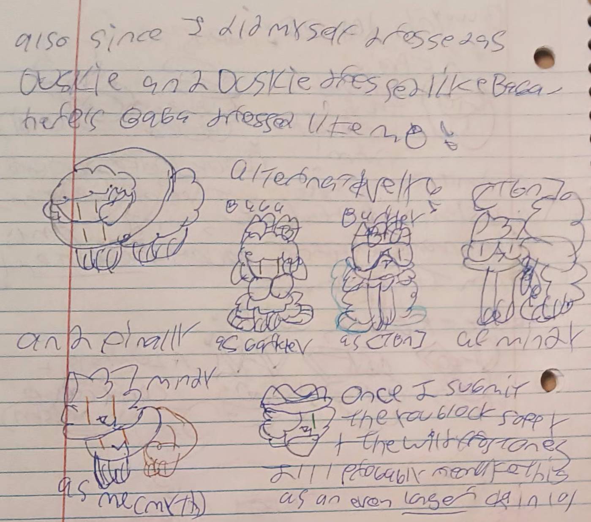
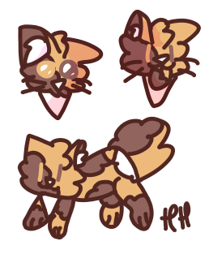

Hi! I'm an aspiring coder who really likes coding and styling things!
I also draw and write a lot! I don't usually post pictures of myself on the internet, so that's why I'm using pictures of Siffrin from In Stars And Time to represent myself.
I am very passionate about my interests.
Coding I have done in the past:
Here are some other things about me!!!
I drew this image! this one right ^ here yep
I usually draw digital art like this one ->, but due to Life Circumstances I cannot do so at this moment.
However, I wish to return to drawing like I used to
I also wish to return to writing on 4thewords!
One interest of mine that I can engage in is playing the Magikrab's Gauntlet in Cassette Beasts, however! I haven't reached the end yet, but I'm doing my best!